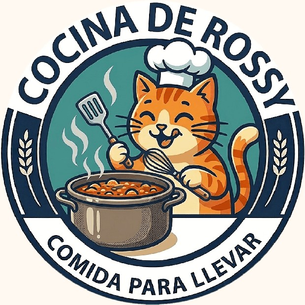
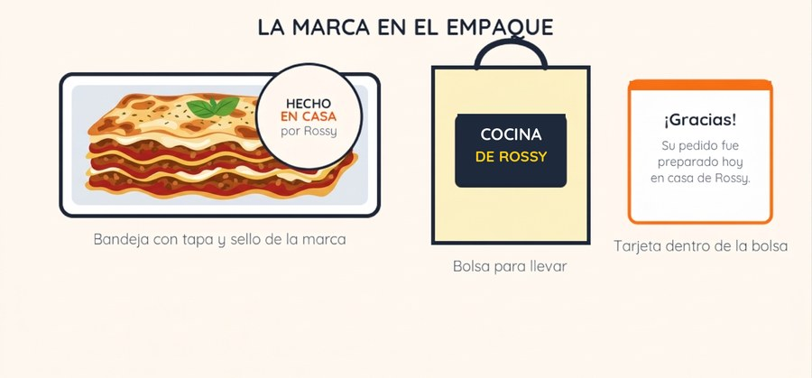
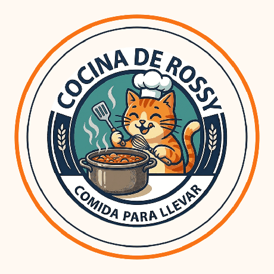
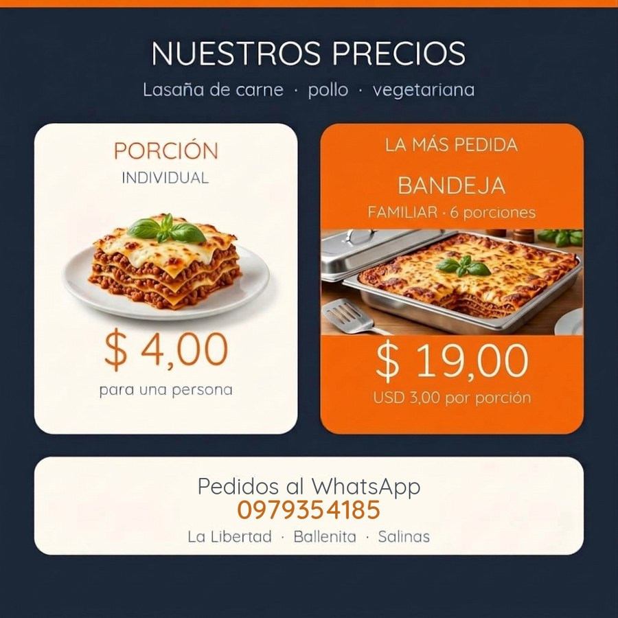

La gatita, los colores, las letras y la forma de hablar
Cocina de Rossy
La marca es el nombre, el logo y la forma de hablar del negocio. Es lo que la gente recuerda cuando piensa en la cocina de Rossy.

Versión principal, sobre fondo crema.

Estos son los colores oficiales. Se sacaron del propio logo, así que todo lo que se haga (publicaciones, carteles, etiquetas) debe usar estos mismos tonos.
| Letra | Dónde se usa |
|---|---|
| Quicksand | La letra redondeada y amable que se usa en la web y las redes. Es gratis y parecida a la del logo. |
| Para títulos | Quicksand en negrita, azul marino. |
| Para textos | Quicksand normal o medium, en gris azulado. |
| Impresos | Si Quicksand no está disponible, se usa Verdana o Trebuchet MS. |
Nunca se deforma, ni se estira, ni se le cambian los colores.
Dejar alrededor del logo un espacio igual al ancho de la palabra «LASAÑA».
En pantalla, no menos de 90 píxeles. Impreso, no menos de 2 centímetros.
Se usa el logo a todo color o el azul marino.
Se usa la versión con el aro blanco, para que no se pierda el borde.
No se le pone sombras, ni contornos nuevos, ni se lo recorta a medias, ni se lo pone sobre fotos muy cargadas.
Todas estas imágenes están en la carpeta web/assets del proyecto. Se pueden usar tal cual, en el celular o en la computadora.
| Archivo | Para qué sirve |
|---|---|
| logo-rossy.png | El logo principal sobre fondo crema. Es el que más se usa. |
| logo-rossy-transparente.png | El logo sin fondo. Para ponerlo sobre cualquier color. |
| logo-rossy-sticker.png | Con un aro blanco. Para fondos oscuros o para imprimir stickers. |
| logo-rossy-sobre-marino.png | El emblema sobre fondo azul marino, para fondos oscuros. |
| logo-rossy-transparente.png | Sin fondo, para ponerlo sobre cualquier color. |
| perfil-redes.png | La foto de perfil lista para WhatsApp, Instagram y Facebook. |
| avatar-marino.png | La foto de perfil sobre fondo azul marino. |
| portada-facebook.png | La portada de la página de Facebook. |
| portada-web.png | La imagen principal del sitio web. |
| post-precios.png | Publicación con los precios. Se actualiza cuando cambien. |
| post-promocion.png | Publicación general para anunciar que hay lasaña. |
| post-proceso.png | Publicación de «así la hacemos», cuenta los cuatro pasos. |
| historia-hoy-hay.png | Historia vertical para el día que hay producción. |
| catalogo-whatsapp.png | El catálogo que se envía por WhatsApp cuando preguntan precios. |
| sello-empaque.png | El sello redondo para pegar en la tapa de la bandeja, con espacio para la fecha. |
| stickers-whatsapp.png | Los stickers de la mascota para usar en las conversaciones. |
| icono-512.png | El icono para la aplicación y el sitio web. |


cocinaderossy Desayunos todos los días y lasaña los fines de semana. Escribe al WhatsApp y reserva.
En primera persona y con palabras de casa: «ya están los bolones», «hoy hice lasaña», «quedan cuatro bandejas», «gracias por la confianza».
Si no se entiende en una leída, hay que escribirlo otra vez.
La gente compra cuando ve cómo se hace: el bolón armándose, la salsa, las capas, el horno, el queso estirándose.
Nada de «la mejor del mundo». Mejor: «hecha en casa, con calma».
Aunque sea para decir que no hay cupo. Un cliente ignorado no vuelve.
| Tema | Qué hacer |
|---|---|
| Foto de perfil | El logo en círculo (perfil-redes.png), igual en WhatsApp, Instagram y Facebook. La misma cara en todas partes. |
| Nombre de usuario | El mismo en todas las redes, en minúsculas: @cocinaderossy. |
| Biografía | Desayunos todos los días · Lasaña los fines de semana · Hecho en casa en La Libertad, Santa Elena · Pedidos por WhatsApp |
| Qué publicar | Fotos del desayuno de la mañana, el proceso de la lasaña, el corte, clientes contentos y el aviso de cupos del fin de semana. |
| Cada cuánto | Tres veces por semana como mínimo. Es mejor publicar tres veces bien que siete veces de cualquier manera. |
| Horarios que funcionan | Publicar entre las 11:00 y las 13:00 (antes del almuerzo) y entre las 17:00 y las 19:00 (antes de la cena). |
| Cómo cerrar la venta | Cada publicación termina con una instrucción concreta: «Escribe al WhatsApp y reserva tu bandeja». |
| Reseñas | Cada semana, pedir a un cliente satisfecho que deje una reseña o una foto. Veinte reseñas buenas son una ventaja real. |